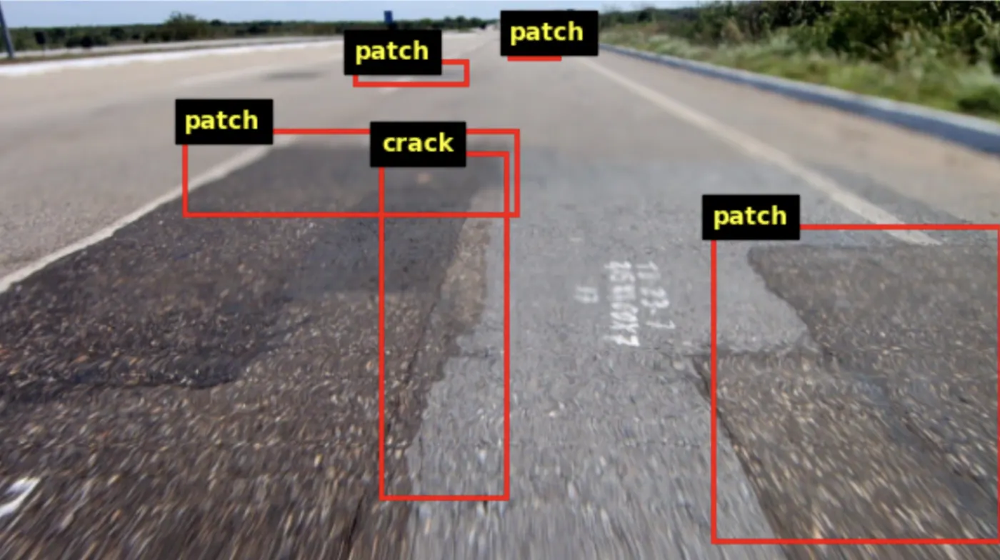

Setor público
Inspeção de rodovias por IA
- Desafio
- Transformar quilômetros de filmagem de rodovias em um relatório objetivo de condição do pavimento.
- Solução
- Ensemble de redes neurais que detecta buracos, trincas e remendos automaticamente.
- Resultado
- Adotado como padrão de inspeção de rodovias no setor público.